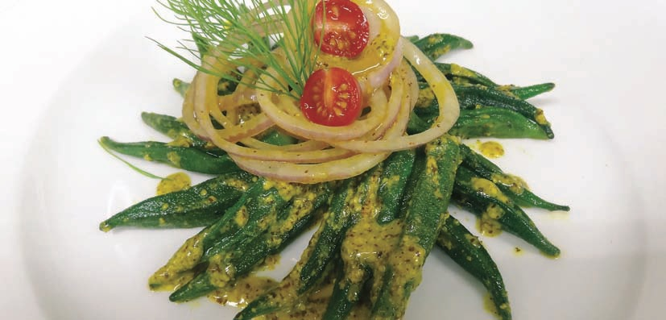

|
|
MATAR PANEER

|
INGREDIENTS
3 tbsp Oil
½ tsp Cumin seeds
1 tsp Coriander powder
1 tsp Red chilli powder
2 Onions, chopped
1 tsp Ginger paste
1 tsp Garlic paste
4 Large tomatoes, skin removed and
puréed*
1½ cups Frozen peas
3 cups Paneer, cubed
½ tsp Garam masala powder
A pinch of turmeric powder
Salt to taste
METHOD
Put the oil in a bowl. Add cumin seeds, turmeric,
coriander and chilli powders. Microwave for 2
minutes. Add chopped onion, and ginger and garlic
pastes. Microwave for 6 minutes. Add tomatoes.
Microwave on HIGH again for 6 minutes. Add paneer
and peas. Stir. Microwave, covered, on HIGH for 6
minutes. Stir twice. Stir in garam masala. Leave to
stand for 3-4 minutes. Add salt. Serve hot with rice or
chapatis. |
Tip: Round dishes give more
even cooking results than
squares or rectangles. |
ALOO METHI
|
INGREDIENTS
3 Medium-sized potatoes, cut into 1"
pieces
1 cup Water
6 Tomatoes,skin removed*
3-4 Green chillies, slit
2 cups Fresh fenugreek leaves (methi)
1 tbsp Vegetable oil
1 tsp Cumin powder
6–8 cloves Garlic, crushed
Salt to taste
METHOD
In a bowl, put the cut potatoes in 1 cup water.
Microwave, covered, on HIGH for 7 minutes. Drain
the water. Purée the tomatoes in a blender until
smooth. Put the purée in a bowl. Add green chillies
and cumin. Microwave for approximately 6 minutes
until you get the consistency of a thick sauce. You
may need to cook for a few minutes longer since the
cooking time varies according to the water content
of the tomatoes. Add the potatoes, fenugreek leaves
and salt. Microwave, covered, for another 2 minutes
on HIGH or until the potatoes are soft, the gravy
thick, and the fenugreek leaves cooked but still
green. In another bowl, pour 1tbsp oil. Add the
crushed garlic. Microwave for 2 minutes, until
golden. Pour over the potato mixture. Stir. Serve hot
with chapatis. |
*Place tomatoes without any water in the MWO on
HIGH for 4 minutes. The skin will blister and peel off
easily. |
KASUNDI BHINDI
 |
INGREDIENTS
150 gm Medium-sized lady fingers
1 Medium-sized onion, cut in rings
30 ml Kasundi (Bengali mustard sauce)
5 gm Red chilli powder
30 ml Mustard oil
2 gm Ginger, cut in juliennes
2 gm Green chillies, cut in juliennes
2 gm Salt
METHOD
Wash and slit the lady fingers from the centre. Fill the
slit with salt and red chilli powder. Heat oil in a
microwave-proof container for 2 minutes. Take out
the bowl. Add lady fingers. Microwave on HIGH for 2
minutes. Remove lady fingers from the bowl, keep on
a plate and pour the Kasundi. Mix it with a spoon
while it is still hot. Put onion, green chillies and
ginger in the remaining oil of fried lady fingers.
Microwave for 30 seconds. Arrange the lady fingers
in a circular pattern. Top it up with onion garnish. |
|
|

|
|
.jpg)